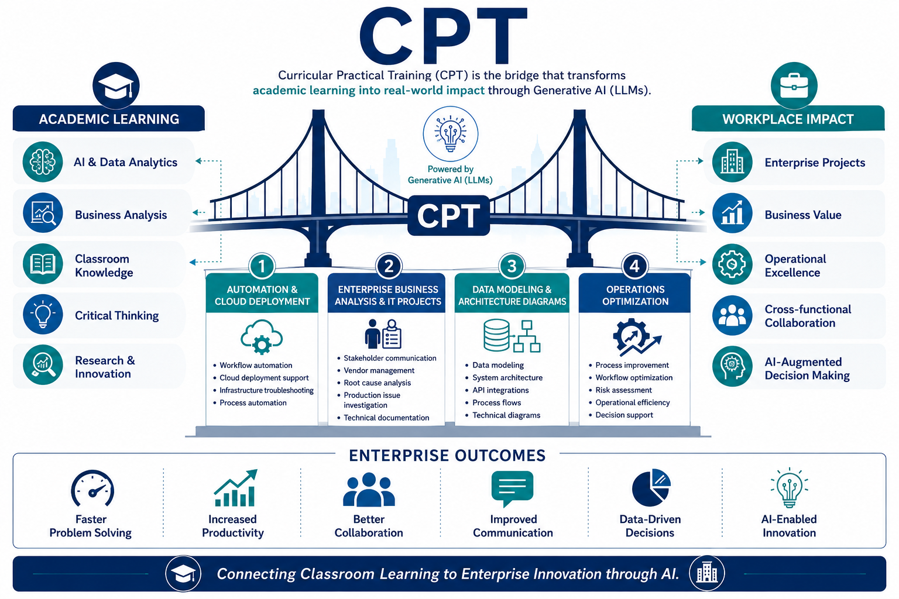

Description
A focused AI copilot supporting requirements clarification, meeting summaries, user stories, process analysis, stakeholder communication, and structured decision support.
Professional Portfolio
Business Analyst · AI & Machine Learning Graduate Student
I combine business analysis, artificial intelligence, and data analytics to design practical, user-centered solutions that improve communication, documentation, collaboration, and decision-making.
About Me
I am a Business Analyst with experience supporting enterprise IT projects through stakeholder collaboration, requirements analysis, system integrations, and AI-enabled business solutions.
I am currently pursuing a master's degree in Artificial Intelligence and Machine Learning, where I continue to strengthen my expertise in AI, data analytics, prompt engineering, responsible AI, and digital transformation.
I translate complex business challenges into clear, practical solutions by combining structured business analysis with emerging AI capabilities. My approach emphasizes usability, transparency, and human oversight.
Artifact 1
Enterprise Business Analyst Copilot
BridgeAI is an AI-powered assistant created to support Business Analysts throughout the software development lifecycle. This authentic course artifact shows how generative AI can improve communication, documentation, requirements work, and decision support while maintaining responsible human oversight.
A focused AI copilot supporting requirements clarification, meeting summaries, user stories, process analysis, stakeholder communication, and structured decision support.
To investigate how AI can reduce repetitive Business Analysis work, improve documentation quality, and strengthen stakeholder communication.
BridgeAI demonstrates how AI can augment professional judgment, save time, improve consistency, and help teams communicate more effectively.
Identified recurring challenges experienced by Business Analysts.
Created a problem statement focused on productivity and documentation.
Explored AI-supported Business Analysis workflows.
Built and configured a custom Business Analyst assistant.
Compared model outputs and refined prompts through iteration.
This artifact combines my Business Analysis experience with AI solution design. Its unique strength is the emphasis on user needs, transparency, and human accountability rather than automation alone.
The project applies foundational AI/ML competencies including prompt engineering, model comparison, iterative testing, responsible AI, and human-AI collaboration in a realistic professional setting.
Course materials on Design Thinking, responsible AI, prompt engineering, and model evaluation informed the development of this artifact.
Artifact 2
AI Approaches in Cybersecurity Operations
This authentic course presentation investigates how traditional machine learning and deep learning support modern cybersecurity operations. It was selected as Artifact 2 because it demonstrates a different skill set from BridgeAI: industry research, technical comparison, ethical analysis, teamwork, and evidence-based recommendations.
The presentation compares Cloudflare's CatBoost-based bot detection with Microsoft Security Copilot's transformer-based approach and evaluates cost, explainability, privacy, regulatory, and security trade-offs.
To analyze where machine learning and deep learning add value in cybersecurity and recommend responsible adoption strategies based on the problem, data, risk, and organizational context.
The artifact helps technology leaders distinguish when interpretable traditional ML is sufficient and when deep learning is justified by complex, unstructured signals.
Reviewed cybersecurity data types, operational challenges, AI applications, and scholarly sources.
Selected Cloudflare and Microsoft Security Copilot as contrasting real-world examples.
Compared algorithms, data characteristics, inference needs, explainability, and business impact.
Examined privacy, automation bias, model risk, regulation, and responsible adoption.
Organized the analysis into a clear visual narrative and manually verified content and citations.
This artifact translates technical AI concepts into practical guidance for security leaders. It connects model selection with cost, explainability, regulatory compliance, and organizational risk rather than treating AI performance as the only decision factor.
The project demonstrates meaningful application of foundational AI/ML skills through model comparison, algorithm selection, responsible AI, data privacy, cybersecurity analysis, research synthesis, and professional communication.
As the Industry Analyst, I researched the cybersecurity industry, identified key data types and operational challenges, and connected those findings to AI and machine learning applications. I also helped ensure the presentation was understandable to both technical and business audiences.
Open or download the complete 13-page presentation, including case studies, comparison, ethical reflection, strategic recommendation, and references.
Artifact 3
Connecting classroom knowledge with practical enterprise applications

Curricular Practical Training connects academic learning with practical workplace experience. This group-created infographic explains how knowledge from Artificial Intelligence, Data Analytics, Business Analysis, critical thinking, and research can be applied to real-world enterprise environments through Generative AI.
This infographic was developed collaboratively by our group to represent CPT as a bridge between classroom learning and workplace impact. It presents four major areas where Generative AI and large language models can support professional work: automation and cloud deployment, enterprise business analysis and IT projects, data modeling and architecture diagrams, and operations optimization.
It also highlights outcomes such as faster problem-solving, increased productivity, improved communication, stronger collaboration, data-driven decisions, and AI-enabled innovation.
The objective of this group project was to visually demonstrate how academic knowledge can be transferred into professional practice through CPT. We aimed to create an easy-to-understand resource showing how Generative AI can enhance business processes, technical work, collaboration, and decision-making.
Discussed the relationship between academic learning, CPT, Generative AI, and workplace responsibilities.
Identified relevant academic competencies, practical AI applications, and enterprise outcomes.
Organized the information into a bridge-themed infographic representing the transition from classroom learning to workplace impact.
Each group member contributed ideas, reviewed the content, and helped refine the wording and visual organization.
The completed infographic was reviewed collaboratively for clarity, accuracy, consistency, and visual appeal.
This infographic gives students and professionals a practical way to understand how academic knowledge and Generative AI can be applied within enterprise environments. It simplifies complex concepts and demonstrates how AI can support business analysis, automation, technical documentation, system design, operational improvement, and decision-making.
The artifact’s unique value is its bridge-based visual structure, which clearly connects academic learning on one side with workplace impact on the other. It combines technical applications, professional competencies, and business outcomes in one visual resource, making the relationship between CPT and enterprise innovation easy to understand.
This artifact is relevant to my academic and professional development because it reflects how I apply knowledge from my Artificial Intelligence and Data Analytics program to real-world business and technology challenges. It also demonstrates skills in teamwork, business analysis, visual communication, process improvement, technical documentation, and cross-functional collaboration.
Course materials, class discussions, and group research related to Curricular Practical Training, Generative AI, large language models, and enterprise applications.
Skills
Contact
{kind=link}